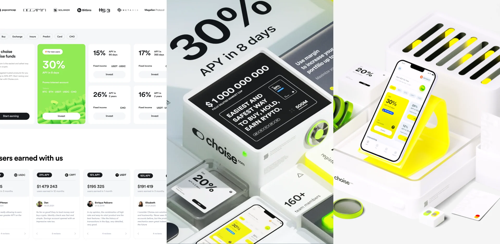
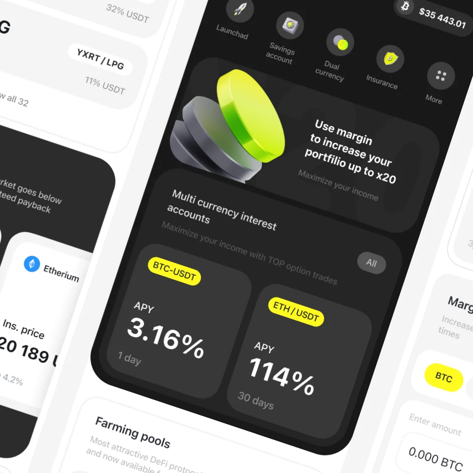
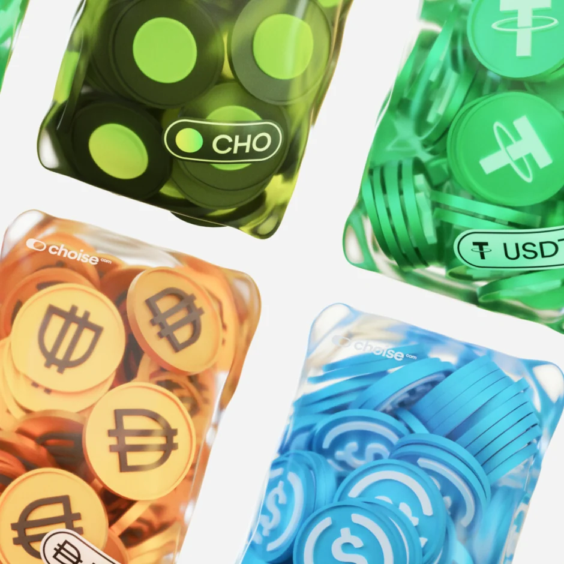
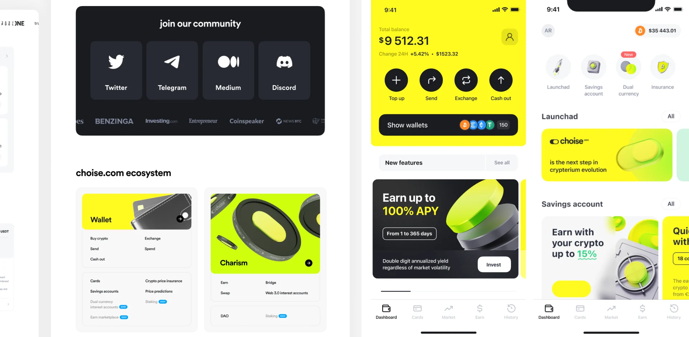

Choise.com
Web3-экосистема: MetaFi-криптобанк с аудиторией 750K+ в 170+ странах.
Я участвовал в полном ребрендинге международной криптоэкосистемы Crypterium в бренд Choise — на стыке продуктовых, маркетинговых и инвестиционных направлений, с выходом на глобальный рынок.
Нужно было перевести бренд на новую айдентику, не растеряв накопленную аудиторию, и собрать систему, готовую к быстрому росту и масштабированию.
Работа началась с исследования на 338 слайдов. Я спроектировал 25 ключевых страниц — каждую в четырёх версиях (desktop/mobile, светлая/тёмная), — собрал дизайн-системы и компонентные библиотеки в Figma и подготовил материалы более чем для двух десятков фондов.
Ребрендинг прошёл без потери аудитории — 750K+ пользователей в 170+ странах, — инфлюенсер-кампании охватили 700K+ подписчиков, а токен CHO показал заметные рыночные результаты.
- Полный ребрендинг Crypterium → Choise без потери аудитории.
- Каждая страница — в 4 версиях: desktop/mobile, светлая/тёмная.
- Материалы для 20+ фондов и международных инвесторов.
- Инфлюенсер-кампании 700K+; токен CHO с рыночными результатами.



